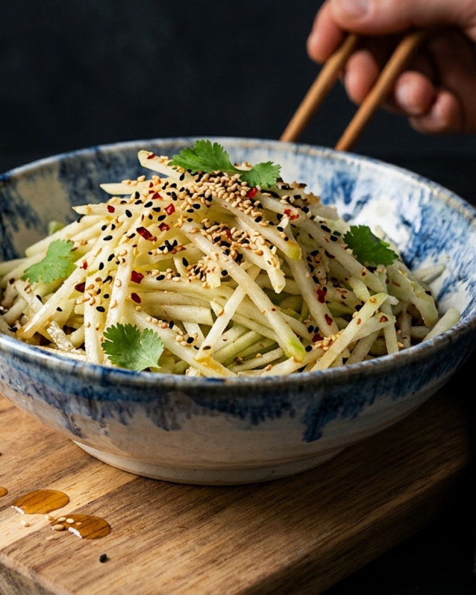

Longevity Profil: Vitamin C, Ballaststoffe, Pflanzenstoffe
Die rohe Kraft der Wurzel trifft auf die Tiefe Asiens.
Manchmal braucht der Körper einen Weckruf. Dieser Salat ist knackig, frisch und voller Ingwer-Schärfe. Kohlrabi liefert Vitamin C und Ballaststoffe, Ingwer und Sesamöl bringen Wärme und Tiefe.
Zubereitung ca. XX Min.